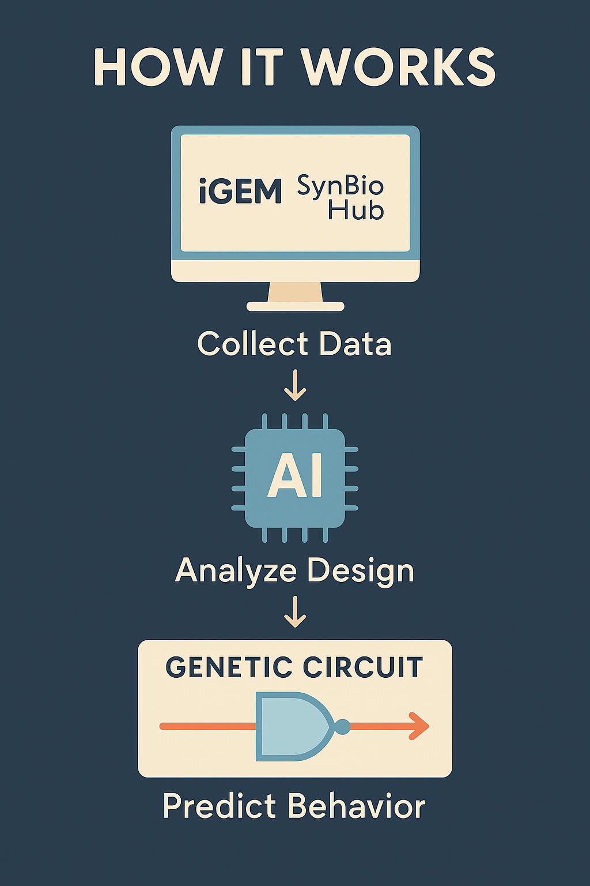
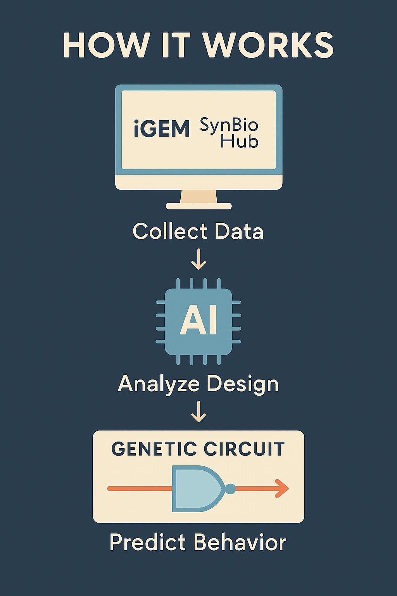

How It Works
This tool gathers data from public repositories like iGEM and SynBioHub, processes it through an AI pipeline to analyze design features, and then predicts how a given genetic circuit will behave.
This tool gathers data from public repositories like iGEM and SynBioHub, processes it through an AI pipeline to analyze design features, and then predicts how a given genetic circuit will behave.
